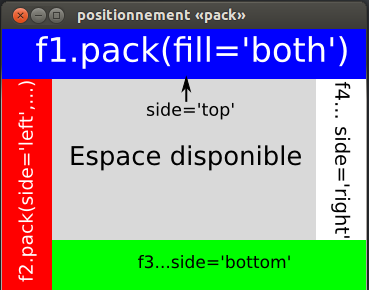

Module standard de Python
objectif: composer des interfaces graphiques - IHM
Lancer l’interpréteur interactif - console - python (version 3 ou plus)
Vous obtenez quelquechose comme
Python 3.2.3 (default, Feb 27 2014, 21:31:18)
[GCC 4.6.3] on linux2
Type "help", "copyright", "credits" or "license" for more information.
>>>
>>> from tkinter import *
>>> fen = Tk()
>>> # configuration du titre
>>> fen.title('première fenêtre')
''
Création d’un widget w
w = Widget(parent, opt1=val1, opt2=val2, ...)
Afficher du texte
>>> salut = Label(fen, text="Bonjour tout l'monde!")
Argh! Rien ne se produit!
Tout widget w doit être positionné dans son conteneur
w.pack(opt1=v1, opt2=v2, ...)
Testons
>>> salut.pack()
>>> b = Button(fen, text='Action')
>>> b.pack(pady=5)
Obtenir la liste des options du widget w
w.keys() # ou Widget.keys()
Obtenir la liste des méthodes (ou attributs) de w
dir(w) # ou dir(Widget)
Testons
>>> salut.keys() # ou Label.keys()
['activebackground', 'activeforeground', ...]
>>> dir(salut) # ou dir(Label)
['_Misc__winfo_getint', ...]
>>> help(Label.pack) # «q» pour sortir de l'aide en ligne
w['o'] # ou w.cget('o') -> str
w['o'] = valeur
# ou w.config(o1=v1, o2=v2, ...)
# ou w.configure(o1=v1, o2=v2, ...)
Testons
>>> salut['bg'] = 'black'
>>> salut['fg'] = 'green'
>>> salut['width'] = 30
>>> salut['height'] = 3
>>> salut['anchor']
'center'
>>> salut['anchor'] = 'sw' # s ? w ?
>>> salut['anchor'] = 'center'
def action():
# ...
# ...
b['command'] = action # b -> bouton
Exercice
Le bouton bascule la couleur du texte: vert <-> rouge
>>> def action():
... et = salut
... et['fg'] = 'red' if et['fg'] == 'green' else 'green'
...
>>> b['command'] = action
Quatre widgets Frame - f1, f2, f3, f4 - «packer» dans cet ordre
Code complet
Frame(fen, bg='blue', height=50).pack(fill='both')
Frame(fen, bg='red', width=50).pack(side='left', fill='both')
Frame(fen, bg='green', height=50).pack(side='bottom', fill='both')
Frame(fen, bg='white', width=50).pack(side='right', fill='both')
Récupérer l’icone (clic droit -> enregistrer ...)
>>> fen = Tk()
>>> fen.title('«todo» liste')
>>> et1 = Label(fen, text='Nouvelle tâche')
Utilisons une image - PhotoImage - pour la seconde étiquette.
>>> icone = PhotoImage(file='todolist.gif')
>>> # l'image doit être dans le répertoire courant de la console
>>> # pour le connaître: import os puis os.getcwd()
>>> et2 = Label(fen, image=icone)
Il nous faut encore un champ de saisi, Entry et une liste, Listbox .
>>> saisi = Entry(fen) # pour une boîte de saisie
>>> liste = Listbox(fen, height=3) # et une simple liste
>>> b = Button(fen, text='Vider')
Cette fois-ci, nous utiliserons le gestionnaire de grille, grid
w.grid(row=ligne, column=col, ...)
# ligne, col: entier à partir de 0
Pour nous, une grille à 3 ligne et 2 colonnes avec fusion des deux colonnes de la dernière ligne.
>>> et1.grid(row=0, column=0, pady=3)
>>> saisi.grid(row=0, column=1)
>>> et2.grid(row=1, column=0, pady=3)
>>> liste.grid(row=1, column=1)
>>> b.grid(row=2, column=0, columnspan=2, pady=3)
Événement: l’utilisateur agit sur l’interface
Pour réagir à un événement
def gestEvt(evt):
# evt: objet de type Event qui sert à obtenir
# des informations sur les circonstances de l'appel
# du gestionnaire ...
# code qui réalise l'action
w.bind('<description_evt>', gestEvt)
<Return> : insère le contenu de saisi à la fin de liste
>>> def inserer(evt): # définition du gestionnaire
... tache = saisi.get()
... liste.insert('end', tache)
... saisi.delete(0, 'end')
...
>>> saisi.bind('<Return>', inserer) # liaison
Fonction lambda: fonction anonyme composée d’une unique instruction possédant une valeur (expression)
lambda x,y,...: expression
# x,y,... sont les paramètres de la fonction
# valeur de retour: la valeur de l'expression
Exemple
>>> L = lambda x, y: (x ** 2 + y ** 2) ** 0.5
>>> # RAPPEL x ** n signifie « x puissance n »
>>> L(3,4)
5
Application
>>> b['command'] = lambda : liste.delete(0, 'end')
En utilisant une fonction «lambda», permettre à l’utilisateur de supprimer l’élément courant de la liste en appuyant sur la touche Suppr.
liste.delete(i) # où i est l'index de l'élément à supprimer
i = liste.curselection()
'<Delete>'
SOLUTION
liste.bind('<Delete', lambda evt: liste.delete(liste.curselection()))
Permettre à l’utilisateur de modifier l’ordre des éléments dans la liste par «cliquer-glisser-relâcher»
Éléments de la solution
index = -1 # pour mémoriser l'index de l'item à déplacer
def selclic(evt):
global index # nécessaire pour modifier la variable globale index
# ???
def selrel(evt):
# ???
# l'utilisateur appuie sur le bouton gauche de la souris
liste.bind('<Button-1>', selclic, '+')
# lorsqu'il relâche ce bouton
liste.bind('<ButtonRelease-1>', selrel)
evt.y
indexElt = liste.nearest(y)
elt = liste.get(i)
liste.insert(i, elt)
Sortir de l’interpréteur - exit(), ouvrir Geany, créer le fichier exemple2.py et y coller le code suivant
from tkinter import *
def ajout(evt):
text = saisi.get()
liste.insert('end', text)
saisi.delete(0, 'end')
index = -1
def selclic(evt):
global index
pass # à coder
def selrel(evt):
pass # à coder
# Construction de la fenêtre principale ...
fen = Tk()
fen.title('«todo» liste')
# ... et des différents widgets qui la composent ...
et1 = Label(fen, text='Nouvelle tâche:')
saisi = Entry(fen)
icon = PhotoImage(file='todolist.gif')
# ATTENTION: todolist.gif doit être dans le même répertoire que ce programme !
et2 = Label(fen, image=icon)
# EN cas de pb: Remplacer image=icon par text='à faire' ET commenter la ligne icon = ....
liste = Listbox(fen, height=3)
b = Button(fen, text="Vider", command=lambda: liste.delete(0,'end'))
# ... qu'on positionne dans une grille.
et1.grid(row=0,column=0, pady=3)
saisi.grid(row=0,column=1)
et2.grid(row=1,column=0, pady=3)
liste.grid(row=1,column=1)
b.grid(row=2, column=0, columnspan=2, pady=3)
# On définit le comportement de la GUI
saisi.bind('<Return>', ajout)
liste.bind('<Delete>', lambda evt: liste.delete(liste.curselection()))
liste.bind('<Button-1>', selclic, '+') # '+' ? voir NOTE tout à la fin
liste.bind('<ButtonRelease-1>', selrel)
# On lance la boucle principale (cela est automatique dans la console)
# Cette boucle est responsable de la gestion des événements
fen.mainloop()
# NOTE: tkinter gère déjà l'événement «clic gauche» dans la liste
# afin de positionner la sélection courante.
# Pour ne pas supprimer son gestionnaire, nous devons ajouter le
# nôtre : liste.bind(..., ..., '+')
def selclic(evt):
global index # pour pouvoir modifier index qui est «globale»
index = liste.nearest(evt.y)
def selrel(evt):
item1 = liste.get(index)
index2 = liste.nearest(evt.y)
if index2 == index: # rien à faire !
return
item2 = liste.get(index2)
liste.delete(index) # on supprime le premier item ...
liste.insert(index, item2) # qu'on remplace par le second
liste.delete(index2) # et vice versa
liste.insert(index2, item1)
Widget Canvas: zone rectangulaire dans laquelle on peut dessiner
>>> from tkinter import *
>>> fen = Tk()
>>> fen.title('Un canevas pour dessiner')
>>> can = Canvas(fen, width=500, height=500)
>>> can.pack(padx=5, pady=5)
>>> can['bg'] = 'white'
Pour créer un item graphique dans un canevas can,
id = can.create_<item>(points, option=valeur, ...)
# où <item> est à remplacer par rectangle, line, polygon, oval ...
# la valeur de retour est l'identifiant numérique de l'item créé
le supprimer,
can.delete(id)
le déplacer,
can.move(id, dx, dy)
récupérer la liste de ses coordonnées,
pts = can.coords(id) # pts de la forme [x1, y1, x2, y2, ...]
modifier/récupérer une de ses options.
can.itemconfig(id, opt=val, ...)
val = can.itemcget(id, 'option')
>>> pt1 = 200, 200
>>> pt2 = 300, 300
>>> can.create_rectangle(pt1, pt2, fill='black')
1
>>> idc = 1
>>> can.move(idc, 0, -100)
>>> pts = can.coords(idc)
>>> pts
>>> can.itemconfig(idc, width=10, outline='blue')
>>> annul = can.bind('<Button-3>',
... lambda e: print('({},{})'.format(e.x, e.y)))
>>> # clic droit sur le canevas
>>> can.unbind('<Button-3>', annul)
>>> ido = can.create_oval(pts, fill='white')
Pour déplacer une figure formée de plusieurs items, on les marque (tag) avec une chaîne
>>> can.itemconfig(idc, tags='fig')
>>> can.itemconfig(ido, tags='fig')
>>> can.move('fig', 0, 100)
Transformations disponibles: translation, homothétie (scale)
>>> x1, y1, x2, y2 = can.coords('fig')
>>> can.scale(ido, (x1+x2)/2, (y1+y2)/2, 0.5, 0.5)
>>> # .scale(idOuTag, x_centre, y_centre, facteur_x, facteur_y)
Pour réaliser une action après un certain délai
fen.after(delai_en_millisecondes, fonction_a_appeler_alors)
>>> fen.after(5000, lambda : print('action'))
>>> # noter le retour immédiat de la méthode: pas de blocage
Animer = agir périodiquement
def animation():
fen.after(500, animation)
# code de l'action à effectuer
print('action')
# lancer l'animation
animation()
>>> ok, dx, dy = True, 5, 0
>>> def animation():
... if ok: fen.after(500, animation)
... can.move('fig', dx, dy)
...
>>> animation()
>>> # puis jouer avec dx et dy pour contrôler le mvt
>>> ok = False # met fin à l'animation
Commençons par définir les actions élémentaires
>>> gauche = lambda : can.move('fig', -5, 0)
>>> droite = lambda : can.move('fig', 5, 0)
>>> bas = lambda : can.move('fig', 0, 5)
>>> haut = lambda : can.move('fig', 0, -5)
Puis associons chaque symbole de touche (keysym) avec l’action correspondante
>>> touches = {'Left': gauche, 'Right': droite, 'Down': bas, 'Up': haut}
Définissons le gestionnaire qui s’occupera d’invoquer l’action en fonction de la touche enfoncée
>>> def depl(evt):
... t = evt.keysym
... if t in touches:
... action = touches[t]
... action()
...
>>> fen.bind('<Key>', depl)
Le mouvement est plutôt «saccadé» ; voyons d’où vient le problème.
Copier-coller le code suivant dans un fichier test_touches.py
import tkinter as tk
def appui(evt):
print('APPUI = touche: {e.keysym}, temps: {e.time}'.format(e=evt))
def relache(evt):
print('RELACHE= touche: {e.keysym}, temps: {e.time}'.format(e=evt))
fen = tk.Tk()
fen.bind('<KeyPress>', appui) # équivalent à '<Key>'
fen.bind('<KeyRelease>', relache)
fen.mainloop()
On obtient par exemple
RELACHE= touche: f, temps: 872580888
APPUI = touche: a, temps: 872593933
RELACHE= touche: a, temps: 872594433
APPUI = touche: a, temps: 872594433
RELACHE= touche: a, temps: 872594471
APPUI = touche: a, temps: 872594471
RELACHE= touche: a, temps: 872594504
touches = {
'nom_touche1': {
'etat': False, # True si cette touche est enfoncée
'action': action1 # ref vers fonction
},
'nom_touche2': {
'etat': False,
'action': action2
},
# ...
}
def appui(evt):
t = evt.keysym
if t in touches: touches[t]['etat'] = True
def relache(evt):
t = evt.keysym
if t in touches: touches[t]['etat'] = False
fen.bind('<Key>', appui)
fen.bind('<KeyRelease>', relache)
def controleur():
fen.after(40, controleur)
for t in touches:
v = touches[t]
if v['etat']:
action = v['action']
action()
Mettre en oeuvre cette solution pour déplacer ‘fig’ de manière fluide
Partir de l’ébauche suivante:
import tkinter as tk
# Déclarations générales
gauche = lambda : can.move('fig', -5, 0)
droite = lambda : can.move('fig', 5, 0)
bas = lambda : can.move('fig', 0, 5)
haut = lambda : can.move('fig', 0, -5)
# ...
# GUI
fen = tk.Tk()
fen.title("mouvement fluide")
can = tk.Canvas(fen, width=500, height=500, bg="white")
can.pack(padx=5, pady=5)
# dessin de la figure
can.create_rectangle(200, 200, 300, 300,
fill='black', width=10, outline='blue',
tags='fig')
can.create_oval(225, 225, 275, 275,
fill='white', tags='fig')
# liaisons d'événements et controleur ...
# boucle principale
fen.mainloop()
import tkinter as tk
# Déclarations générales
gauche = lambda: can.move('fig', -5, 0)
droite = lambda: can.move('fig', 5, 0)
bas = lambda: can.move('fig', 0, 5)
haut = lambda: can.move('fig', 0, -5)
touches = {
'Left': {
'etat': False,
'action': gauche
},
'Right': {
'etat': False,
'action': droite
},
'Down': {
'etat': False,
'action': bas
},
'Up': {
'etat': False,
'action': haut
},
}
def appui(evt):
t = evt.keysym
if t in touches: touches[t]['etat'] = True
def relache(evt):
t = evt.keysym
if t in touches: touches[t]['etat'] = False
def controleur():
fen.after(40, controleur)
for t in touches:
t = touches[t]
if t['etat']:
t['action']()
# GUI
fen = tk.Tk()
fen.title("mouvement fluide")
can = tk.Canvas(fen, width=500, height=500, bg="white")
can.pack(padx=5, pady=5)
# dessin de la figure
can.create_rectangle(200, 200, 300, 300,
fill='black', width=10, outline='blue',
tags='fig')
can.create_oval(225, 225, 275, 275,
fill='white', tags='fig')
# liaisons d'événements et controleur ...
fen.bind('<Key>', appui)
fen.bind('<KeyRelease>', relache)
controleur()
# boucle principale
fen.mainloop()
{kind=link}